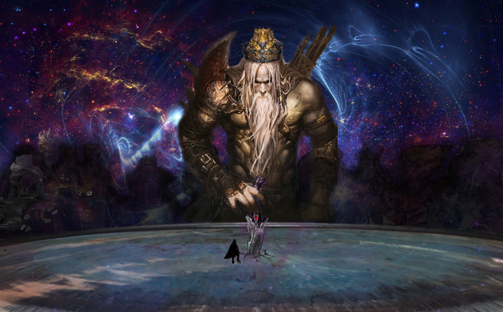

Created Dienstag 26 Mai 2020
Satharius = Dolch (Hexblade) von Grim
war früher Kuranesh, deshalb eng mit Apokai verbunden - siehe dort
Erste Aufgabe
"Träger des Zeichens, ich habe euch zu mir geholt. Zeit für erste Aufgabe, erste Prüfung. sucht die Trümmer meiner Herrschaft, am Fuße des Berges meiner letzten irdischen Stätte, im Osten des irdischen Reiches; nehmt schwarzen schlüssel (bewacht von Schatten-???), erklimmt Berg, betretet Grabmal, löst Rätsel der schwarzen Krypta, kommt zurück wenn erfolgreich. -> Zeichen dass würdig"
- Razif bietet uns 1000g für die Recorvery von mundanem Buch mit rotem Umschlag, 10g zusätzlich pro lebendem Mann aus den selben Ruinen/der Krypta
- wir besiegen 4 Ersten Ritter von Drunai in Duellen und werden damit würdig, bekommen Schlüssel für Krypta
- steigen Mount Kuranesha hinauf, öffnen Krypta
- werden von Razif + Männern überrascht, die zwingen uns vorzugehen
- wir lassen sie vor, aber sie laufen sofort in eine Falle und sterben
- wir gehen hinein
- in der Mitte eine Drachenstatue, die gedreht werden kann. Nur die Tür zu der die Statue schaut ist offen
- Tür zu Inner Sanctum scheint 4 Schlüssel zu brauchen: Stern, Sonne, Blitz, Dreieck
- wir erkunden Crypt of the Unmeant, finden Stern und Blitz
- weiter zu Annointing Chamber (gäbe dort Schätze, teilweise magisch)
- bei Crypt of the First Degrees finden wir Dreieck bei Leiche, vor Sarg von Syvilla Dhal'Kuranesha
- Sarg von Apokai Dhal'Kuranesha zerstört
- im Pavillon von Turbail ist Mordglanz
- die anderen 2 Schlüssel sind bei Apokai und dem Skelett vor Syvilla
- wir lösen das Rätsel von Ghalvan's Sentry und kommen durch die Maze und ins Inner Sanctum
Inner Sanctum
- dort ist ein riesiges, schlagendes Herz auf einem Altar, von schwarzen Adern durchzogen, die zu Säulen führen, die wie Geschwüre aus Schatten aussehen
- Ghalvan kommt dazu, er war die Gestalt, die uns die Prüfungen gegeben hat
- er verwandelt sich in seine Drachenform (auch mit schwarzen Adern) und meint er kann sich nicht gegen die Kontrolle Apokais wehren
- wir schaffen es die 6 Säulen zu zerstören, woraufhin die Kontrolle über Ghalvan schwindet
- dabei entstehen Shadowfiends, aber wir können sie zerstören und befreien das Herz
- plötzlich kommt sehr viel Schattenenergie in den Raum und gibt jedem von uns eine Vision
- danach bildet sich ein Avatar von Apokai aus den Schatten, der uns auf seine Seite ziehen will und von uns die Scherbe verlangt
- wir verneinen und er verschwindet, sagt aber noch "Shakal, flieg"

Gespräch mit Kuranesh
- er ist zufrieden mit Grim
- Kuranesh jetzt wieder frei, Ruinen von Drusk nicht mehr verflucht
- er beauftragt uns die Scherbe zu finden, darf auf keinen Fall Apokai in die Hände fallen